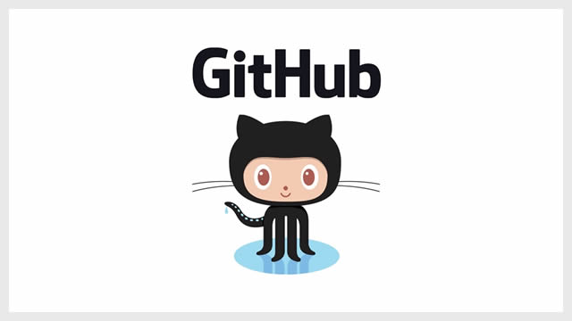
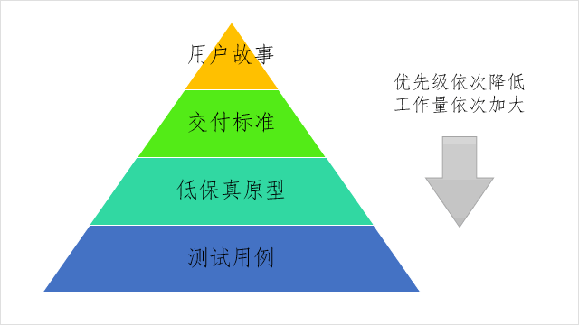

Mark2blog，将markdown文档生成博客的php程序
posted 2016-09-25
mark2blog是用于将markdown文档生成博客的php程序。目前支持简单的模板，分页索引等功能。本博客就是由mark2blog生成。欢迎使用或参与贡献。
Learning PHP Agilely
posted 2016-09-22
近期给工程学院计算机专业的学生讲了一次讲座，主题是互联网创新和创业。其中重点介绍了应该如何学习编程语言，并以PHP为例做了点展开。本篇就是给学生们留的一个作业：创建自己的第一个php程序并在github上开源。


什么样的需求文档能让程序员满意？
posted 2016-07-27
知乎上有人问需求的细节写到什么程度才能不被程序员骂。其实这个问题并不成立。产品经理被程序员骂并不完全是因为需求的细节不到位导致的，还有更深层次的原因。

如何看待微软聊天机器人Tay在推特上变成种族主义者？
posted 2016-03-26
仅仅从Tay沾染了人类的恶习就说人工智能是危险的，不如去担心各大宗教所预言的世界末日。因为同属哲学问题，后者显然更容易讨论。
当个图书管理员可好？
posted 2016-01-06
高中政治课，老师问我们期望从事的职业。我正好溜号被翻牌。你你你，对，就你，你说说，你以后想干啥。我站起来，恍恍惚惚的，说图书管理员。全班哄笑。老师倒好像消气了。冷笑着对那些起哄的说，你们那，naive，大学有专门的图书情报学专业，分不低。
用 Workflowy 高效记笔记
posted 2015-08-31
workflowy是14年才发现的工具。今年才开始重用。现在每天有大量时间用在workflowy上面。这不是一篇workflowy的教程，只是我做笔记和使用workflowy的一些感受。